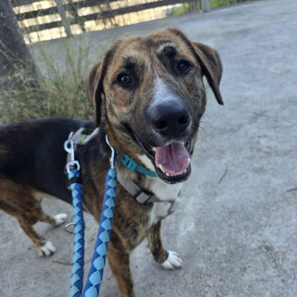
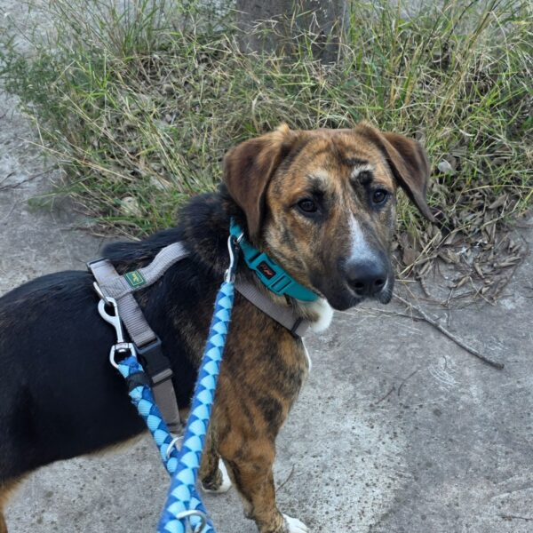

Ells també esperen



Trasto es un perro joven, de tamaño mediano (23–25 kg), y con un carácter maravilloso. Es cariñoso, dulce y muy confiado. Solo quiere querer y sentirse seguro.
Trasto tiene una malformación en la columna que le provoca una artrosis grave y le impide caminar correctamente con las patas traseras. Desde que llegó a la protectora, debido a las escaleras, su movilidad ha empeorado y cada vez arrastra más las patas. La protectora no es un lugar adecuado para él y necesita salir con urgencia.
Probablemente necesitará medicación crónica y una vida tranquila, en una vivienda sin escaleras. Aún no sabemos cuál será su evolución, pero sí sabemos que merece estar cómodo, cuidado y querido.
La protectora se hará cargo del seguimiento y de todos los gastos veterinarios. Necesitamos una familia que pueda ofrecerle una acogida indefinida.
Creemos que su condición pudo ser el motivo de su abandono. Pero Trasto no guarda rencor… sigue confiando y amando a las personas.